We've updated this course, so the videos don't exactly match the lessons. However, we've included them for you to review, and we will update them in a future release.
After completing this lesson, you’ll be able to:
In this lesson, you will:
We've updated this course, so the videos don't exactly match the lessons. However, we've included them for you to review, and we will update them in a future release.
FME can only be as fast as the database it reads from or writes to. This section will help FME increase its efficiency when working with databases.
Reading and filtering data (querying) from a database is nearly always faster when you can use the native functionality of the database. The previously introduced search envelopes and WHERE clauses techniques can drastically improve your database reading performance.
Besides readers, transformers can also be used to query database data. The DatabaseQuerier transformer is the best option. This transformer unifies querying across SQL and NoSQL databases, replacing the SQLExecutor and SQLCreator, allowing you to execute complex queries in a single, configurable tool.
The DatabaseQuerier has two modes:
Here is an example of the Run Once configuration, where the DatabaseQuerier reads the park features in the Downtown neighborhood from a PostGIS table.
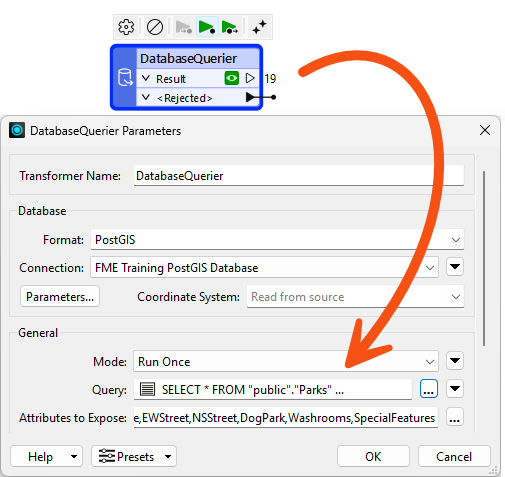
It's using this Query:
SELECT * FROM "public"."Parks"WHERE "NeighborhoodName" = "Downtown"
And here is an example of the Input Driven configuration, where the DatabaseQuerier makes a query to the database for every Neighborhood feature:
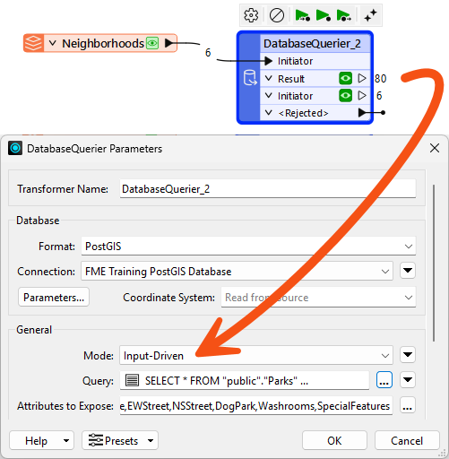
It's using this Query, which makes use of the incoming features' attribute NeighborhoodName:
SELECT * FROM "public"."Parks"WHERE "NeighborhoodName" = '@Value(NeighborhoodName)'
The output from the DatabaseQuerier is an entirely new feature. The DatabaseJoiner transformer is more appropriate if you want to retrieve attributes to attach to the incoming feature.
If you don’t want to write SQL or another query language, use the FeatureReader transformer to conduct similar input-driven reading. However, the FeatureReader operates more generically and is therefore slower.
Use the AI Assist button in compatible transformers to help you craft SQL statements.
Exposing Attributes from the Query
You might notice that your attributes are unexposed when using the DatabaseQuerier. That's because FME doesn't know the attribute names and types before the query is executed at run time. You can define these by clicking the ellipsis button next to Attributes to Expose:
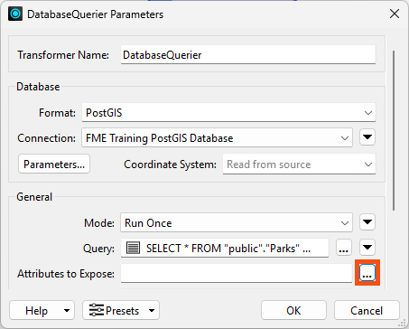
However, it can be tedious to manually type them all in. Instead, we recommend using the Populate from Query... button:
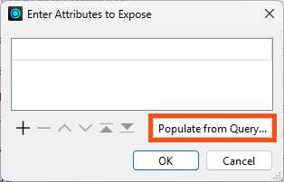
This button lets you re-use your query and FME will automatically identify which attributes to expose based on the results. Even if you don't want to expose all the attributes, it's often faster to add them all and remove the ones you don't want, rather than manually typing each one in.
So far, we've used the DatabaseQuerier to fetch rows from a single table. Its real performance advantage appears when you let the database do work that FME would otherwise do with transformers.
Consider a workspace that needs the parks in every neighborhood. A common approach is to read the whole Neighborhoods table and the whole Parks table, then join or overlay them in FME. That reads every row of both tables across the network, even when only a handful are relevant.
Instead, you can read the Neighborhoods table with a DatabaseQuerier in Run Once mode:
SELECT "NeighborhoodName", "geom" FROM "public"."Neighborhoods"
Then send those features into a second DatabaseQuerier in Input Driven mode, which runs one query per neighborhood:
SELECT * FROM "public"."Parks"WHERE "NeighborhoodName" = '@Value(NeighborhoodName)'
Three things make this faster than reading both tables in full:
For example, this single Run Once query replaces a reader, a Sorter, and a StatisticsCalculator:
SELECT "NeighborhoodName", COUNT(*) AS "ParkCount"FROM "public"."Parks"GROUP BY "NeighborhoodName"ORDER BY "NeighborhoodName"
Input Driven mode is not automatically faster. It makes one round trip to the database per incoming feature, so ten thousand initiator features mean ten thousand queries. Input Driven mode wins when the number of initiator features is small and each query is selective. When the initiator count is large, a single Run Once query that returns everything at once is usually quicker.
Two parameters are worth knowing when you use Input Driven mode:
_matched_records attribute that counts the rows its query returned. Connecting this port is a quick way to find initiators that matched nothing.Queries that fail are output through the <Rejected> port with a _reader_error attribute explaining why, so it is worth connecting that port while you are developing a query.
Whereas the performance of reading from a database mainly depends on the database setup itself, many FME parameters can help fine-tune the overall performance when writing to a database.
Remember that writing to a database incurs network overhead. There has to be a balance between various factors:
Each database writer has a set of parameters for handling these components. Not every format supports these, but the two most common parameters are Features Per Transaction and Features Per Bulk Write.
The Features Per Bulk Write parameter controls the second factor in the list (the amount of data stored by FME awaiting transfer to the database).
A numeric value defines the parameter. Features sent to an FME database writer get cached in memory until the number of features specified by this parameter is reached. Only then will they be sent to the database. This is also known as chunk size.
This parameter balances network traffic with FME performance. A higher number means FME caches more features (using more system resources) but makes fewer requests to the database (and, therefore, causes less network traffic).
A lower number means FME caches less data, but more requests are made to the database.
Features Per Bulk Write must also be considered against the value of Features Per Transaction.
For an example of this parameter, refer to the documentation on Bulk Write Size for the Oracle writer.
Features Per Transaction (sometimes called Transaction Interval) controls the third factor in the list (the amount of data stored in the database awaiting committal).
This, too, is defined by a numeric value. Features sent to the database by FME are cached in the database's memory. When the number of features specified by this parameter is reached, FME sends the command to commit them.
Each commit delays the writing process, so setting this parameter must balance the translation speed (set a higher number) against the risk that a translation may fail and features must be rolled back (set a lower number).
Features Per Transaction Examples
If Features Per Transaction is set to 1, every feature is committed individually. If the process fails, only the last feature will be lost from the database. The cost for this reduced risk is a matching reduction in performance.
If Features Per Transaction is set to a very high value (more than the number of features being written), then only one commit takes place. If the process fails, all features submitted to the database will be lost. The benefit of this increased risk is a matching increase in performance.
An interaction between these two parameters controls where features are cached.
If Features Per Transaction is less than or equal to Features Per Bulk Write, then FME caches several features and sends them to the database, immediately committing them.
If Features Per Transaction is greater than Features Per Bulk Write, then FME sends features to the database, which will be cached until the transaction commit total is reached.
The Transaction and Chunk parameters can differ from format to format, so please review the format documentation.
Whereas indexes can improve performance for reading data, they can cause a significant reduction in writing speed.
That’s because the database automatically updates the index with every written feature. This occurs on a per-feature basis, regardless of commit intervals.
To remedy this, it’s suggested that you drop (delete) indexes before bulk-inserting data into a database table. You can do this directly on the database, or from FME using a transformer that runs SQL statements, such as the DatabaseQuerier.
A writer feature type also has options to truncate or drop tables when writing to them:
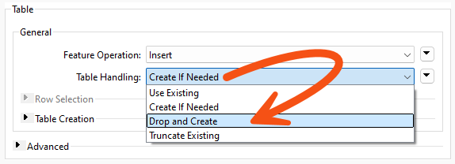
As with the above, dropping a table is more efficient than truncating it because the drop action also removes the indexes.
For similar reasons, you may want to turn off networking connectivity when writing data to a Geodatabase geometric network.

Jennifer needs to speed up the city's garbage collection lookup. Members of the public call to ask which day their garbage is collected, and her team answers by entering an address ID into a workspace hosted on FME Flow. The lookup returns the right answer but takes longer than it should, because the workspace reads the whole postal address table and then discards almost all of it.
In this exercise, you will:
This exercise runs against either a PostGIS database hosted on Amazon RDS or an Esri Geodatabase, and both are available to you without an extra licence. Only the PostGIS route needs a connection set up first, so how you start depends on which one you choose.
FME Training PostGIS Database.
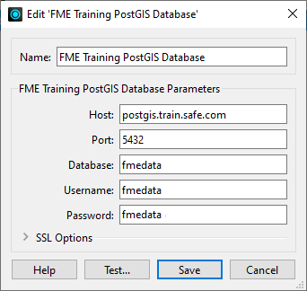
Running the workspace before you change anything gives you the baseline to measure against. A published parameter accepts an address ID, the postal address table is read and filtered against it, the chosen address is overlaid against garbage zones, and the result is written as an HTML page.
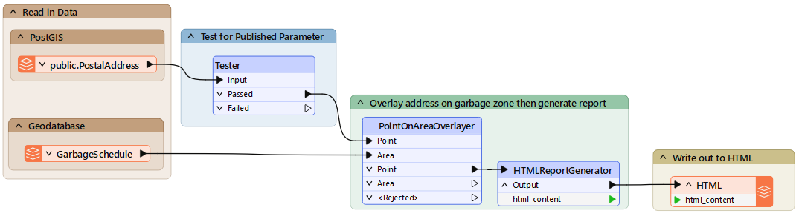
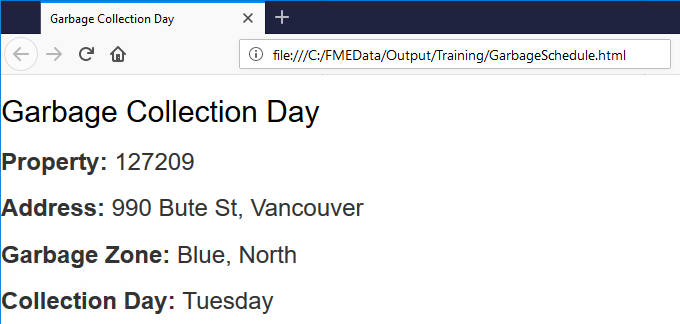
PostGIS
INFORM|FME Session Duration: 4.9 seconds. (CPU: 0.4s user, 0.0s system)
INFORM|END - ProcessID: 32380, peak process memory usage: 166800 kB, current process memory usage: 115728 kB
Esri Geodatabase
INFORM|FME Session Duration: 4.2 seconds. (CPU: 0.6s user, 0.2s system) INFORM|END - ProcessID: 31808, peak process memory usage: 167356 kB, current process memory usage: 111968 kB
Neither PostGIS nor Esri Geodatabase offers a WHERE clause on the reader itself, but both offer one on the reader feature type. Filtering there means the database returns the single row you asked for instead of the whole table.
"AddressId" = $(AddressID). Note the lowercase "d" in the "Id" part of the field name.OBJECTID = $(AddressID).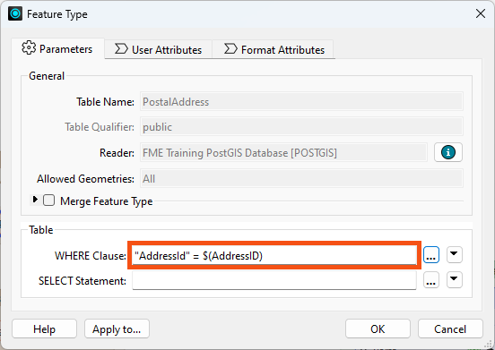
The Tester was doing the filtering the WHERE clause now performs inside the database, so it has no work left to do.
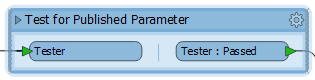
With the filter pushed into the database, FME now reads one feature instead of the entire postal address table. The saving shows up in time rather than memory.
PostGIS
INFORM|FME Session Duration: 2 seconds. (CPU: 0.3s user, 0.0s system)
INFORM|END - ProcessID: 32740, peak process memory usage: 125512 kB, current process memory usage: 113872 kB
Esri Geodatabase
INFORM|FME Session Duration: 2.3 seconds. (CPU: 0.1s user, 0.0s system)
INFORM|END - ProcessID: 25568, peak process memory usage: 119420 kB, current process memory usage: 109508 kB
A reader with a WHERE clause and a DatabaseQuerier reach the same result on a query this simple, so expect similar timings here. The reason to learn the DatabaseQuerier is what happens when the query stops being simple, which is where writing SQL directly starts to pay. This step and the next are PostGIS only.
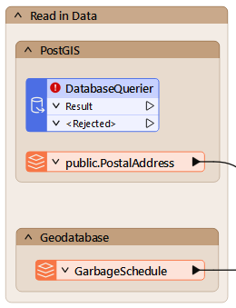
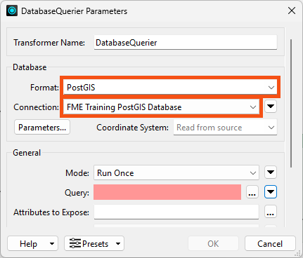
SELECT * FROM "public"."PostalAddress"
WHERE "AddressId" = $(AddressID)
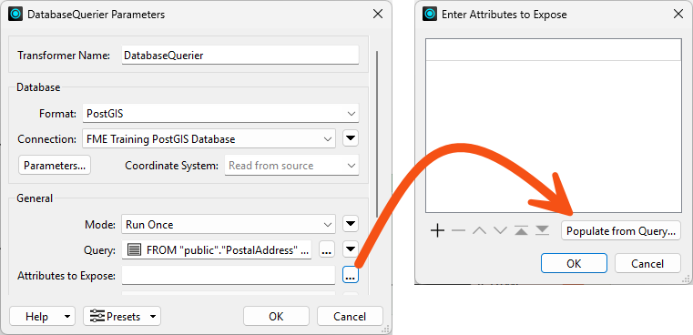
SELECT * FROM "public"."PostalAddress"
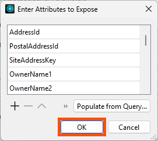
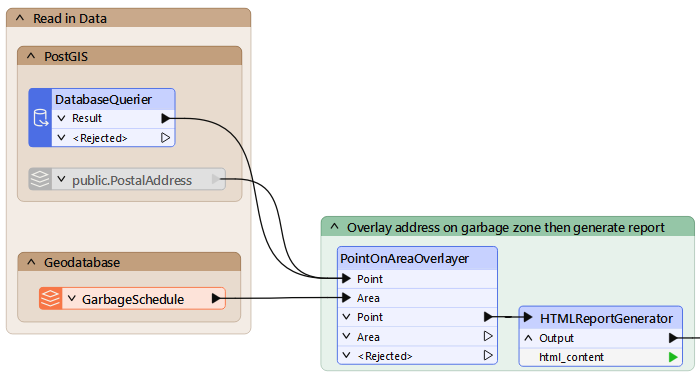
INFORM|FME Session Duration: 2.2 seconds. (CPU: 0.2s user, 0.1s system)
INFORM|END - ProcessID: 27756, peak process memory usage: 128100 kB, current process memory usage: 116328 kB
You have moved the filtering into the database twice over, first with a reader WHERE clause and then with a DatabaseQuerier. The lookup now reads a single address row instead of an entire table.